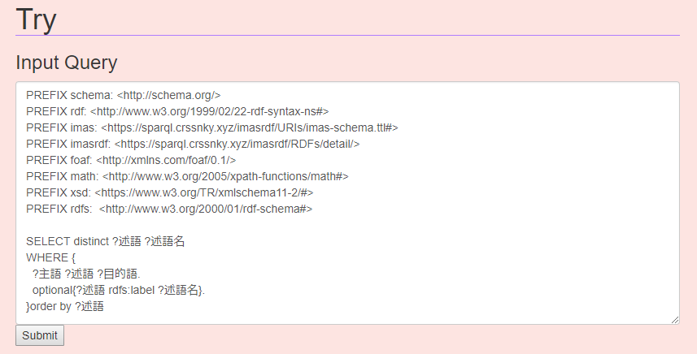

注意
当ドキュメントはSPARQLの詳しい解説はしません。SPARQLについては
こちらから。
- クエリを投げる
-

im@sparqlのトップページにあるこの入力フォームは、実際にクエリを入力してその結果を知るためのものです。
目的とする結果が得られるまでは、こちらのフォームで試すと良いです。
サイトに入ったときにすでに入力されているクエリはこちらです
上部にある
PREFIXは、その名の通り接頭辞を宣言しています。
RDFではデータを、
トリプル(Triple)と呼んでいる主語・述語・目的語の3つの関係で表現しています。これらは全て
IRIで表すことができます。
その
IRIは、長く、何度も出てきて冗長になってしまうため、
PREFIXを使って省略することができます。
PREFIX imas: <https://sparql.crssnky.xyz/imasrdf/URIs/imas-schema.ttl#>
つまりこの行は、
https～を、今後は
imas:で表しますよ～と宣言しています。
もし、その後
imas:Idolという文字列が出てきたら、それは
https://sparql.crssnky.xyz/imasrdf/URIs/imas-schema.ttl#Idolとして解釈されます。